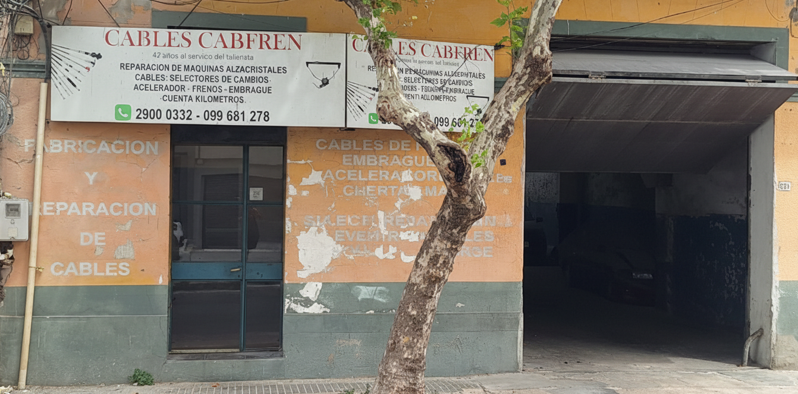
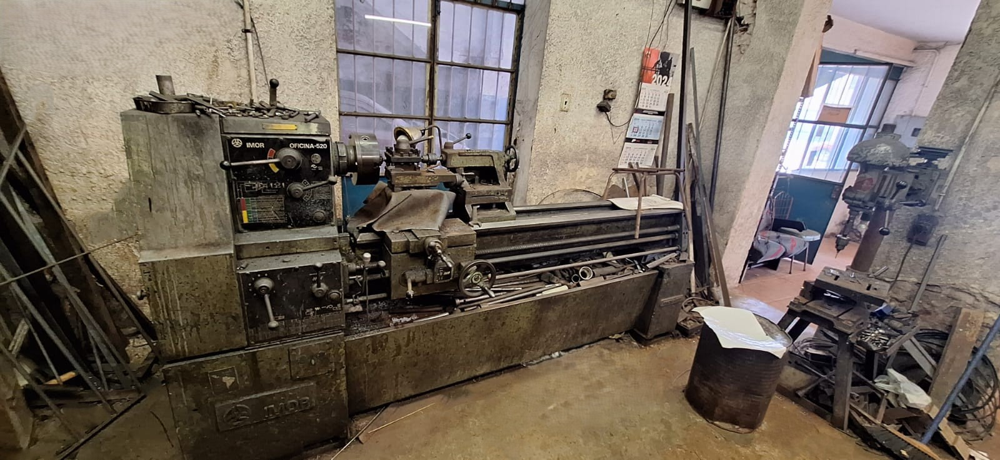
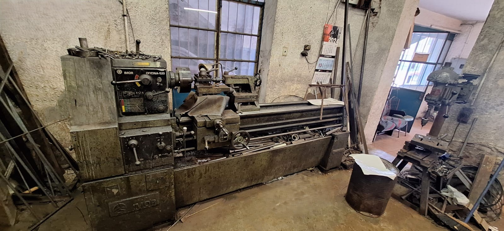
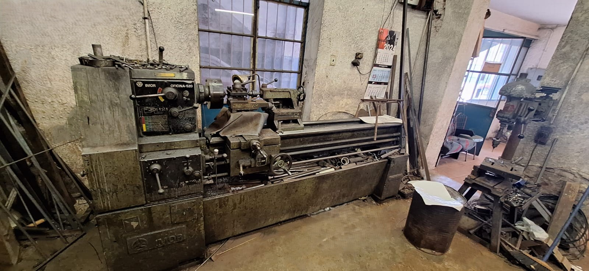
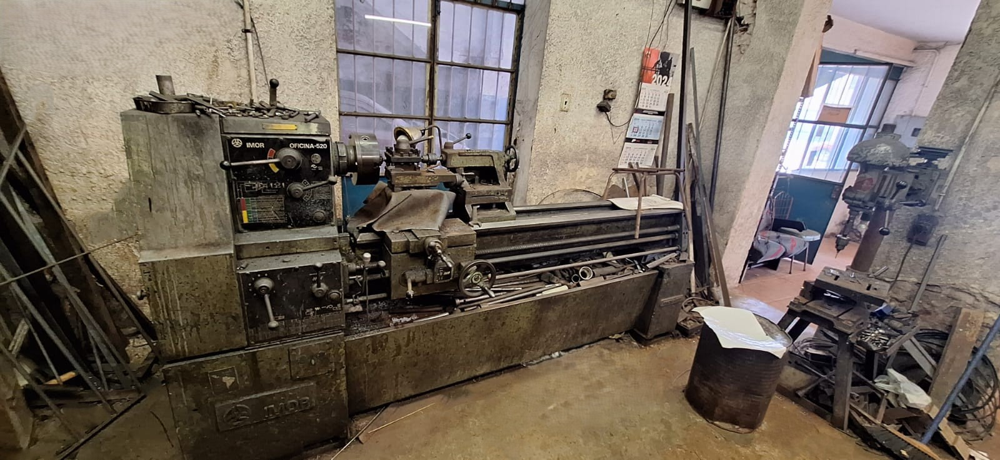

Nuestro taller

 



Cables a medida en el día, como los talleres de antes.
Fabricación y reparación de cables de movimiento y freno para autos, camionetas, utilitarios y maquinaria.
Fabricamos y reparamos cables de freno para todo tipo de vehículos, incluyendo modelos antiguos y difíciles de conseguir.
Cables de embrague fabricados en el día, con precisión y calidad artesanal para cualquier marca y modelo.
Cables de acelerador a medida para autos, camionetas y maquinaria. Trabajo rápido y confiable.
Fabricación y reparación de cables de cambio para todo tipo de vehículos, incluyendo marcas viejas.
Reparación y fabricación de cables de velocímetro para autos antiguos y modernos.
Reparación de selectores de cambio para todo tipo de vehículos.
Reparación especializada de alzacristales eléctricos y manuales para autos y camionetas.
Cabfren es un taller especializado en la fabricación y reparación de cables de freno, cables de embrague, cables de acelerador, cables de cambio, cables de velocímetro y selectores de cambio, además de reparación de máquinas alzacristales.
Trabajamos para autos, camionetas, utilitarios y maquinaria. Hacemos cables a medida en el día y atendemos marcas y modelos antiguos que casi nadie toca.
Con más de 40 años de experiencia en el rubro, ofrecemos atención personalizada, trabajo prolijo y de confianza en Montevideo.

Dirección: La Paz 1284 esquina Yaguaron, Montevideo, Uruguay
Teléfono: +598 99 681 278
WhatsApp: +598 99 681 278
Lunes a viernes: 9:00 a 12:30 y de 14:00 a 18:00